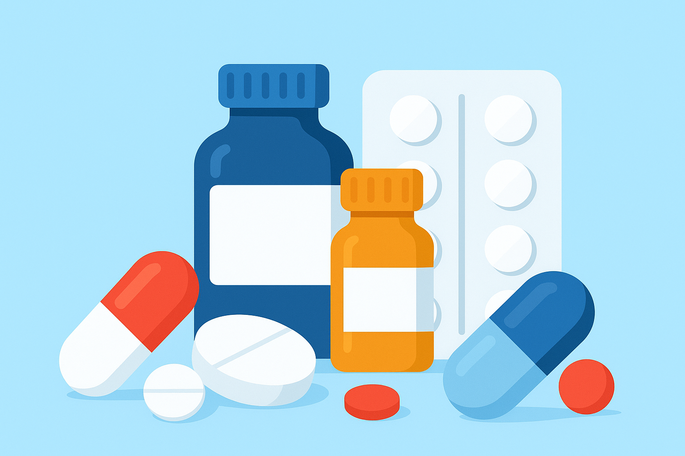
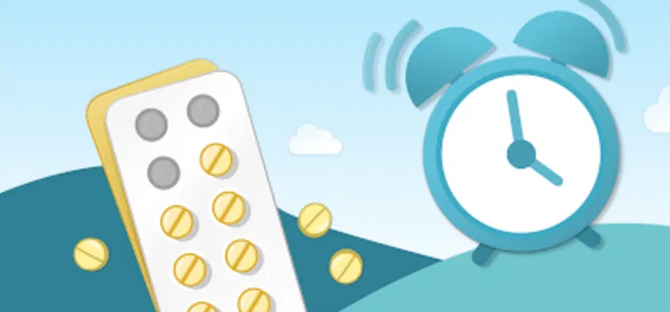

<ion-header>
  <ion-toolbar>
    <app-company-name [companyName]="MediReminder"></app-company-name>
    <ion-buttons slot="end">
      <ion-menu-button menu="mainMenu"></ion-menu-button>
    </ion-buttons>
  </ion-toolbar>
</ion-header>

<ion-content class="ion-padding">

  <h2>Hola, {{ usuarioEmail }} 👋</h2>
  <p>Gestiona tus medicamentos y recordatorios fácilmente.</p>

  <!-- Tarjeta para agregar o registrar los medicamentos -->
  <ion-card>
    
    
    <ion-card-header>
      <ion-card-title>Mis Medicamentos</ion-card-title>
    </ion-card-header>

    <ion-card-content>
      Lleva un control de todos tus medicamentos.
    </ion-card-content>

    <ion-button expand="block" color="primary" routerLink="/medicamentos">
      Ir a Mis Medicamentos
    </ion-button>

  </ion-card>

  <!-- Tarjeta para registrar los recordatorios de medicamentos -->
  <ion-card>
    

    <ion-card-header>
      <ion-card-title>Recordatorios</ion-card-title>
    </ion-card-header>

    <ion-card-content>
      Configura alarmas para no olvidar tus dosis.
    </ion-card-content>

    <ion-button expand="block" color="secondary" routerLink="/recordatorios">
      Ver Recordatorios
    </ion-button>
    
  </ion-card>

</ion-content>

